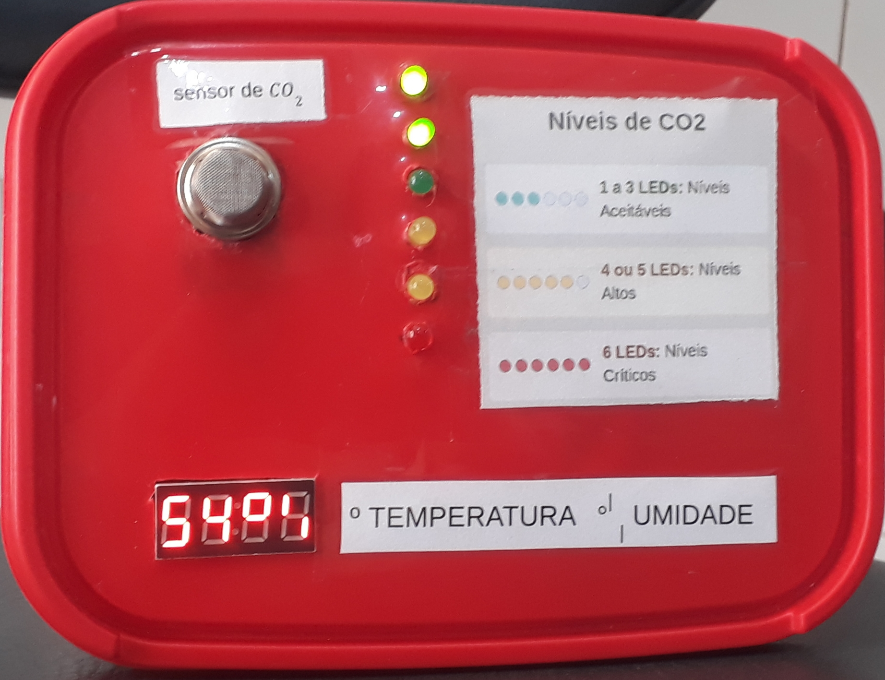

A integração de robótica com sensores ambientais e inteligência artificial está ampliando caminhos para uma agricultura realmente inteligente e sustentável. Ao entender profundamente as condições microclimáticas e do solo em tempo real, os produtores podem otimizar o uso de recursos, minimizar perdas, aumentar a produtividade e, em última instância, garantir a segurança alimentar de forma mais eficiente e responsável. É a tecnologia a serviço do alimento, conectando o campo ao futuro de maneira cada vez mais forte. A robótica e a agricultura de precisão estão remodelando o futuro do campo.
Não se trata apenas de substituir o trabalho humano, mas de complementar e otimizar as operações, liberando os agricultores para focar em decisões estratégicas e na gestão de seus negócios. A integração de inteligência artificial, big data e robótica promete uma era onde a produção de alimentos será mais inteligente, eficiente e capaz de alimentar uma população crescente de forma sustentável.
 CLIQUE AQUI PARA VER O VÍDEO NA PRÓXIMA PÁGINA